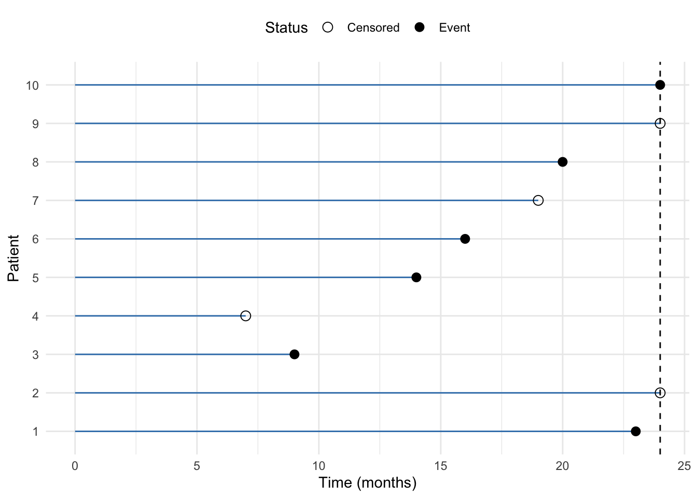
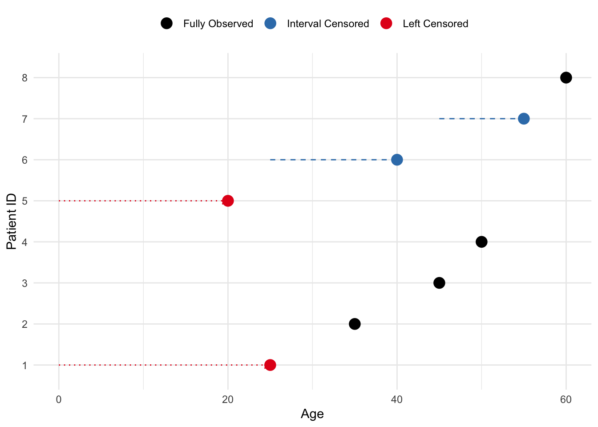
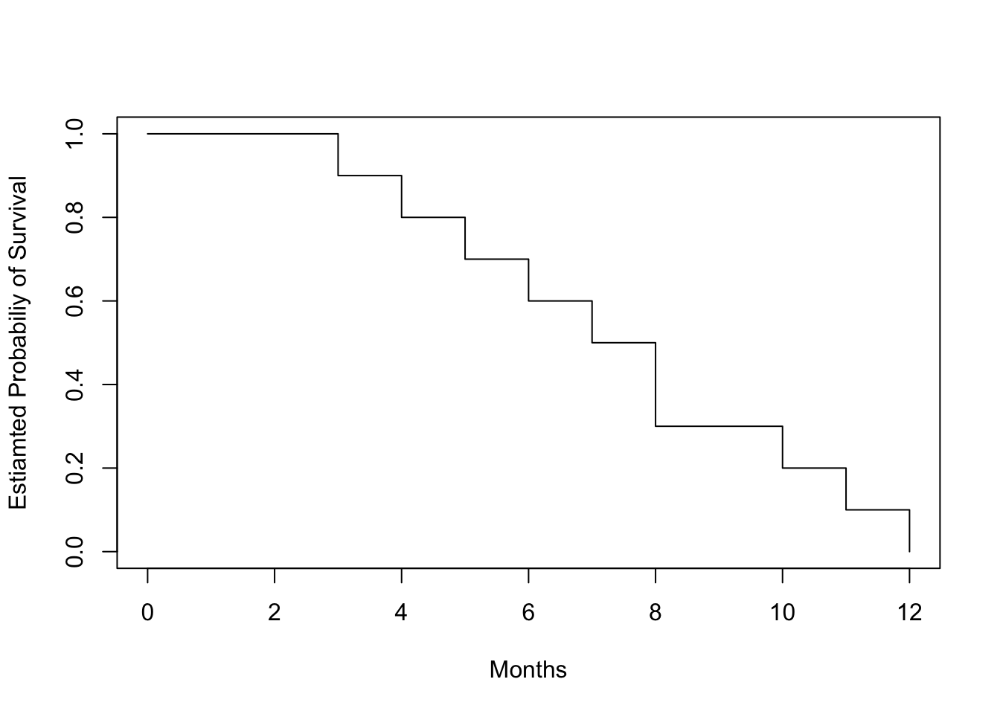
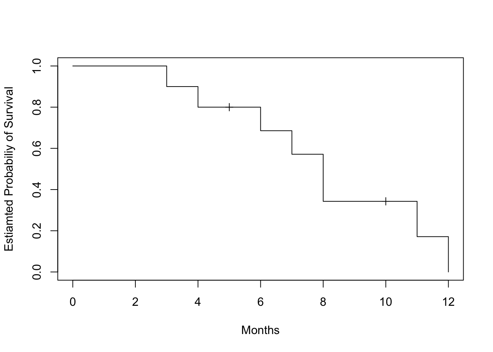
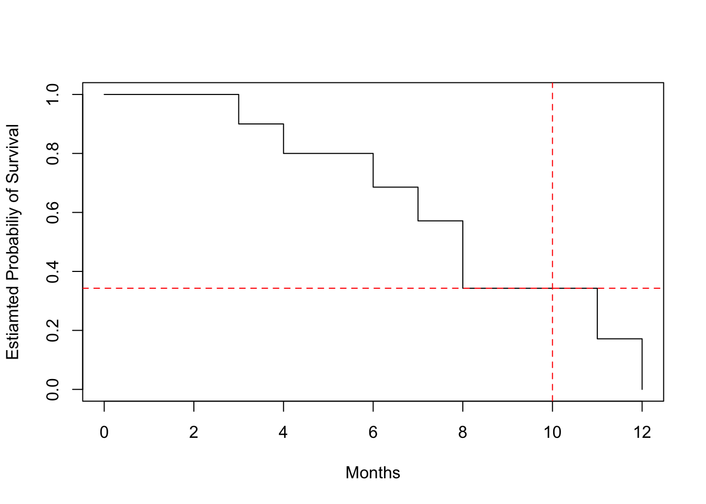
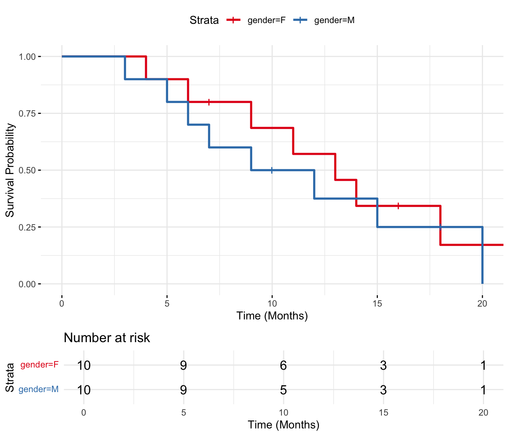
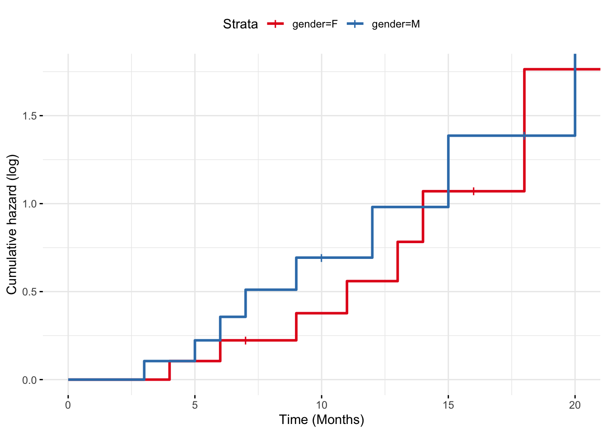

The term survival analysis refers to statistical methods developed to study time-to-event data, originally applied to time until death in 17th-century mortality studies, which is where the term “survival” originates.
Over the decades its scope has broadened to include a wide range of applications in both medical studies and beyond, in fields such as marketing, engineering or criminology and many more.
The common factor in survival analysis is the study of censored data that arise when studying a unique kind of outcome variable: time until an event occurs.
This event, can be death, as previously mentioned, but also disease onset or relapse in medical studies. In other fields, we can study time until next purchase (marketing), time until machine failure (engineering), time until a released prisoner commits another crime (criminology), and many more.
In fact, survival analysis is applicable whenever censored data occurs, and these cases are not limited to studying time-based events. We can use survival analysis methods to study the number of treatment sessions until a patient recovers or the number of attempts until a student passes an exam.
Censoring occurs when the event of interest has not yet been observed by the end of the study. This makes survival analysis especially useful for incomplete data sets, where we can still make use of the available information to estimate the time to event.
With survival analysis, we can compare groups (e.g., treatment vs. control) and determine which factors increase or decrease the hazard (risk) of the event occurring over time, even when adjusting for other variables.
We can incorporate time-dependent variables, allowing the analysis to account for changing risk factors, such as fluctuating health conditions or environmental factors, and include multiple states and/or events. For example, a patient may progress through different stages of a disease (multiple states), or a patient dying from different causes may prevent the occurrence of the primary event being studied (multiple events, competing risks).
1.2 Survival and censoring times
Let’s imagine a mortality study of terminally ill patients receiving a certain medical treatment. We follow a group of patients over 24 months follow-up period and record the time until death or until the end of the study. For each patient, we suppose there is:
a true survival time\(T\) and
a censoring time\(C\).
The survival time represents the time at which the event of interest occurs, here death. The censoring time represents the time at which the patient is lost to follow-up (e.g. withdraws from the study) or the study ends.
We observe the random variable\[Y = min (T, C)\]
If the event occurs before censoring (i.e. \(T < C\)) then we observe the true survival time \(T\). Otherwise, if censoring occurs before the event (i.e. \(T > C\)), we observe the censoring time \(C\).
A figure below illustrates the data for 10 patients in this ficitious study.
Code
# Example data for 10 patientsdata <-data.frame(patient =factor(1:10), # Patient IDstime =c(23, 24, 9, 7, 14, 16, 19, 20, 24, 24), # Time to event or censoringstatus =c(1, 0, 1, 0, 1, 1, 0, 1, 0, 1) # Event status (1 = event, 0 = censored))# Plot the data with horizontal linesggplot(data, aes(x = time, y = patient)) +geom_segment(aes(x =0, xend = time, y = patient, yend = patient), color = mycols[2]) +#geom_point(aes(shape =factor(status)), size =3) +geom_vline(xintercept =24, linetype ="dashed") +scale_shape_manual(values =c(1, 16), labels =c("Censored", "Event")) +labs(x ="Time (months)", y ="Patient", shape ="Status") +theme_minimal() +theme(legend.position ="top")

Figure 1.1: Example of right-censored data in a mortatily study lasting 24 months. The horizontal lines represent the time to event or censoring for each patient. The points indicate whether the event occurred (event) or not (censored).
We we observe 10 \((Y, \sigma)\) pairs, which we denote as \((y_1, \sigma_1, \dots, (y_n, \sigma_n))\), where \(n = 10\). From Figure 1.1, we can see that:
for patient #1 we get \((y_1= t_1, \space \sigma_1 = 1)\) since we observe event (death) as ca. 23 months, before the end of the follow-up at 24 months.
for patient #2 we get \((y_2= c_1, \space \sigma_1 = 0)\) since the patient is still alive at the end of the study at 24 moths, meaning that the patient has survied at least 24 months (censored)
for patient #3 we get \((y_3= t_3, \space \sigma_3 = 1)\) since we observe event (death) at 9 months
for patients #4, we get \((y_4= c_4, \space \sigma_4 = 0)\), anther censored data point. The study is not over yet, the patient has not diet but is lost to follow-up, e.g. due to withdrawing from the study
analogously, for patients #5, #6, #8 and #10 we observe survival times, and for patients #7 and #9 we observe censoring times.
1.3 Independent censoring
In order to analyze survival data, we need to make some assumptions about the censoring process. One of the key assumptions in survival analysis is independent censoring. This assumption states that the reason for censoring is unrelated to the likelihood of the event occurring. In other words, censored individuals should have the same probability of experiencing the event as those who remain in the study.
For example, in a cancer study, if a number of patients leave the study for reasons unrelated to their health status, their data can be treated as censored without biasing the results, since censoring does not provide any information about the outcome. However, if a number of patients drop out early because they are very sick, this would violate the assumption of the independent censoring.
1.4 Left and interval censoring
In addition to right-censored data, we may encounter left and/or interval-censored data. Left censoring occurs when the event happened before the observation period started, whereas interval censoring occurs when the event is known to have happened between two specific time points within the study.
Imagine an age study in which left censoring occurs when a patient was diagnosed with a disease before the study began, but the exact age of diagnosis is unknown. For example, if a patient is known to have been diagnosed before age 25, but the exact age is not recorded, they are left-censored. Interval censoring occurs when a patient’s diagnosis happens between two observed ages, but the exact age of diagnosis is unknown. For instance, if a patient was healthy at age 45 and diagnosed by age 55, but the precise age of diagnosis isn’t known, their data is interval-censored.
Code
# Create a data frame for 8 patients# Left-censored patients were diagnosed before the study, and interval-censored patients were diagnosed between visitsdata <-data.frame(patient_id =1:8,start_age =c(NA, 30, 40, 35, NA, 25, 45, 50), # Start of observation or known age for interval censoring (NA for left-censored)end_age =c(25, 35, 45, 50, 20, 40, 55, 60), # Age of diagnosis or end of observationtype =c("Left Censored", "Fully Observed", "Fully Observed", "Fully Observed", "Left Censored", "Interval Censored", "Interval Censored", "Fully Observed"))# Plot the dataggplot(data, aes(x = end_age, y =factor(patient_id), color = type)) +# Add points for observed ages (diagnosis age or censoring)geom_point(size =4) +# For interval-censored patients, add a horizontal line to show the intervalgeom_segment(data =subset(data, type =="Interval Censored"), aes(x = start_age, xend = end_age, y =factor(patient_id), yend =factor(patient_id)),color = mycols[2], linetype ="dashed") +# For left-censored patients, add an arrow showing the uncertainty before diagnosisgeom_segment(data =subset(data, type =="Left Censored"), aes(x =0, xend = end_age, y =factor(patient_id), yend =factor(patient_id)),color = mycols[1], linetype ="dotted", arrow =arrow(length =unit(0.2, "cm"))) +# Customize the plot labels and appearancelabs(x ="Age", y ="Patient ID") +scale_color_manual(values =c("Left Censored"= mycols[1], "Fully Observed"="black", "Interval Censored"= mycols[2])) +theme_minimal() +theme(legend.position ="top", legend.title =element_blank())

Figure 1.2: Example of left and interval censoring in an age study. Left-censored patients were diagnosed before the study, and interval-censored patients were diagnosed between visits.
In this session, we will focus on right censored data.
1.5 Kaplan-Meier estimator
The survival curve, or survival function, is a decreasing function that quantifies the probability of surviving past time \(t\) and is defined as \[S(t) = Pr(T > t) \tag{1.1}\]
The Kaplan-Meier (KM) estimator is a non-parametric statistic used to estimate the survival function from lifetime data and is given by: \[\hat{S}(t) = \prod_{j=1}^{t} \left( 1 - \frac{d_j}{n_j} \right) \tag{1.2}\]
where:
\(d_j\): number of failures at time \(t_j\)
\(n_j\): number of patients at risk just before time \(t_ij\)
and the product is taken over all time intervals in which a death occurred, up to and including \(t\)
Kapalan-Meier estimator is also known as product-limit estimator.
1.5.1 Tooth filling example
1.5.1.1 Complete follow-up data
Suppose we have 10 patients who receive a tooth filling, and we want to track how long these fillings last before they fail (fall out or need replacement). The failure times (in months) for each patient are recorded:
'data.frame': 10 obs. of 3 variables:
$ patientID: int 1 2 3 4 5 6 7 8 9 10
$ time : num 10 8 11 5 4 3 7 6 12 8
$ surv : num 1 1 1 1 1 1 1 1 1 1
Note that the surv column is a binary indicator of survival status (1 = event, 0 = censored). In this example, we assume all patients have experienced the event (failure) and have complete follow-up data.
To calculate the Kaplan-Meier Curve:
We sort the data by time to failure.2.
For each time, we calculate the survival probabilities, i.e. the probability the filling lasting beyond that time.
We apply the Kaplan-Meier formula (Equation 1.2) to calculate the probability of surviving up to time \(t\), as the product of all individual survival probabilities at each time up to \(t\):
In our example:
Time (months)
Patients at Risk \(n_i\)
Failures \(d_i\)
Survival Probability at \(t_i\)
Cumulative Survival \(S(t)\)
3
10
1
1 - \(\frac{1}{10}\) = 0.9
0.9
4
9
1
1 - \(\frac{1}{9}\) = 0.888
0.9 \(\times\) 0.888 = 0.8
5
8
1
1 - \(\frac{1}{8}\) = 0.875
0.8 \(\times\) 0.875 = 0.7
6
7
1
1 - \(\frac{1}{7}\) = 0.857
0.7 \(\times\) 0.857 = 0.6
7
6
1
1 - \(\frac{1}{6}\) = 0.833
0.6 \(\times\) 0.833 = 0.5
8
5
2
1 - \(\frac{2}{5}\) = 0.6
0.5 \(\times\) 0.6 = 0.3
10
3
1
1 - \(\frac{1}{3}\) = 0.667
0.3 \(\times\) 0.667 = 0.2
11
2
1
1 - \(\frac{1}{2}\) = 0.5
0.2 \(\times\) 0.5 = 0.1
12
1
1
1 - \(\frac{1}{1}\) = 0
0.1 \(\times\) 0 = 0
We can see that:
At 3 months: 10 patients are at risk, and 1 failure occurs, so the survival probability for this period is 0.9.
For 4 months: 9 patients are at risk (since one patient failed at 3 months), and the survival probability is now cumulative (0.9 from the first interval multiplied by 0.888 from this interval).
At time 8 months: two failures occur and the survival probability drops more sharply.
At time 12 months: the survival probability reaches 0, indicating that all patients experienced the event (tooth filling failure) by the end of the study.
We can visualize the Kaplan-Meier curve for this data:
Code
fit.surv <-survfit(Surv(time, surv) ~1, data = data_tooth)plot(fit.surv, conf.int=FALSE, xlab ="Months", ylab ="Estiamted Probabiliy of Survival")

Figure 1.3: Kaplan-Meier survival curve for tooth filling data. The curve shows the estimated probability of survival (filling intact) over time.
1.5.1.2 Including censored data
In real life, not all patients may have complete follow-up data. Some patients might drop out of the study (e.g., move away or lose contact). This is called censoring, and these patients are still considered “alive” (their fillings intact) at the time they are censored, but we do not know what happens to them afterward. The filling can also be intact at the end of the study, but we do not know how long it will last.
Let’s update the data with censoring for two patients:
Patient
Time to Failure (months)
Censored
1
3
No
2
4
No
3
5
Yes
4
6
No
5
7
No
6
8
No
7
8
No
8
10
Yes
9
11
No
10
12
No
Now, we can adjust the KM calculations to account for censored data. For censored patients, we do not count them in the number of events (failures), but they are still included in the “at-risk” population until they are censored.
Time (months)
Patients at Risk \(n_i\)
Failures \(d_i\)
C
Survival Probability at \(t_i\)
Cumulative Survival \(S(t)\)
3
10
1
0
\(1 - \frac{1}{10} = 0.9\)
0.9
4
9
1
0
\(1 - \frac{1}{9} = 0.888\)
0.9 \(\times\) 0.888 = 0.8
5
8
0
1
0.8
6
7
1
0
\(1 - \frac{1}{7} = 0.857\)
0.8 \(\times\) 0.857 = 0.686
7
6
1
0
\(1 - \frac{1}{6} = 0.833\)
0.686 \(\times\) 0.833 = 0.571
8
5
2
0
\(1 - \frac{2}{5} = 0.0.6\)
0.571 \(\times\) 0.6 = 0.343
10
3
0
1
0.343
11
2
1
0
\(1 - \frac{1}{2} = 0.5\)
0.343 \(\times\) 0.5 = 0.171
12
1
1
0
\(1 - \frac{1}{1} = 0\)
0.171 \(\times\) 0 = 0
Censoring affects the calculations:
At 5 months, one patient is censored, so we do not record a failure, and the cumulative survival rate remains unchanged.
At 10 months, one more patient is censored. Again, there is no effect on the failure probability, but the number of at-risk patients decreases.
In other words, if a patient is censored, they contribute to the number of at-risk patients until their censoring time, but they do not contribute to the event (failure) counts.
We can see how the censoring data affect the KM curve:
Code
data_tooth[1, "surv"] <-0data_tooth[4, "surv"] <-0fit.surv <-survfit(Surv(time, surv) ~1, data = data_tooth)plot(fit.surv, mark.time=TRUE, conf.int=FALSE, xlab ="Months", ylab ="Estiamted Probabiliy of Survival")

Figure 1.4: Kaplan-Meier survival curve for tooth filling data. The curve shows the estimated probability of survival (filling intact) over time.
1.5.2 Interpretations
The Kaplan-Meier curve shows the cumulative survival probabilities. A steeper slope indicates a higher event rate (death rate) and therefore a worse survival prognosis. A flatter slope indicates a lower event rate and therefore a better survival prognosis. The curve may have plateaus or flat areas, indicating periods of relatively stable survival.
At specific time points, you can estimate the survival probability by locating the time point on the horizontal axis and dropping a vertical line to the curve. Then, read the corresponding survival probability from the vertical axis.
So, what is the probability that a tooth filling will last 8 months? We can estimate this by locating 8 months on the x-axis and dropping a vertical line to the curve. The estimated survival probability at 10 months is approximately 0.343, meaning there is a 34.3.7% chance that a tooth filling will last 10 months.
Code
plot(fit.surv, conf.int=FALSE, xlab ="Months", ylab ="Estiamted Probabiliy of Survival")abline(v =10, h =0.343, col ="red", lty =2)

Figure 1.5: Kaplan-Meier survival curve for tooth filling data. Red lines indicate the estimated survival probability (tooth being intact) at 10 months.
If the interest is the average length of survival, or life expectancy, following the start of treatment, this may be crudely estimated from the survival curve as the time corresponding to a cumulative probability of survival at 0.5. Alternatively, it can be calculated as: \[\textrm{Life expectancy} = 0.5 + \sum(\textrm{length of interval} \times \textrm{cumulative chance of survival})\]
If there are multiple curves representing different groups, you can compare their shapes and patterns. If the curves are parallel, it suggests that the groups have similar survival experiences. If the curves diverge or cross, it indicates differences in survival between the groups.
Code
# Create data frame for survival datadata_tooth_ext <-data.frame(time =c(3, 5, 6, 7, 9, 10, 12, 15, 18, 20, 4, 6, 7, 9, 11, 13, 14, 16, 18, 22),surv =c(1, 1, 1, 1, 1, 0, 1, 1, 0, 1, 1, 1, 0, 1, 1, 1, 1, 0, 1, 1),gender =c(rep("M", 10), rep("F", 10)))# Create a survival object andsurv_object <-Surv(time = data_tooth_ext$time, event = data_tooth_ext$surv)# Fit Kaplan-Meier curves for genderfit <-survfit(surv_object ~ gender, data = data_tooth_ext)# Plot Kaplan-Meier survival curvesggsurvplot(fit, data = data_tooth_ext,pval =FALSE, # Show p-value for difference in survivalconf.int =FALSE, # Add confidence intervalrisk.table =TRUE, # Show risk table at the bottomggtheme =theme_minimal(), # Use a minimal themexlab ="Time (Months)",ylab ="Survival Probability", palette = mycols[1:2])

Figure 1.6: Kaplan-Meier survival curves for a new extended study of tooth filling data, including 20 participants (10 men and 10 women).
1.6 Comparisons of hazards
Often, in survival analysis we would like to compare the survival patterns of different groups, e.g. is there a group difference between survival times (tooth filling intact) between men and women in the tooth filling study?
The differences between the survival curves are not constant. For example, both groups start at 1 and the survival probability deceases, with lower survival probability for men at 10 months, but then again higher survival probability at 15 months.
We solve the problem of allowing for differences in survival time by comparing hazards in the two groups over the duration of the follow-up. We also assume that the ratio of the hazards in the two groups remains constant over time, even if the underlying hazards change. We assume, that at all times \(t\): \[\frac{h_1(t)}{h_0(t)} = constant\]
where:
\(h_1(t)\) and \(h_0(t)\) are the hazards in the exposed and unexposed groups at time \(t\) (or in one group and the other).
This assumption is called the proportional hazards assumption. It is difficult to estimate the hazard directly from the data, since this would give a series of “spikes” when an even occurs, interspersed with zeros when there is no disease event. Instead we use the cumulative hazard function, \(H(t)\). This is the total hazard experienced up to time \(t\), and is estimated by the sum of the risks at each time \(t\) at which an event occurs \[H(t) = \sum_{i=1}^{t}\frac{d_i}{n_i}\]
If the ratio of the hazards in both groups is constant over time, if follows that the ratio of the cumulative hazard functions must also equal this constant \[\frac{H_1(t)}{H_0(t)} = \frac{h_1(t)}{h_0(t)} = constant\] and applying the rules of logarithms: \[log(H_1(t) - log(H_0(t)) = log(constant)\]
Therefore, if the proportional hazards assumptions is met, then graphs of the log of the cumulative hazard functions should be parallel.
Code
# Plot Kaplan-Meier survival curvesggsurvplot(fit, data = data_tooth_ext,fun ="cumhaz", # Add cumulative hazard functionpval =FALSE, # Show p-value for difference in survivalconf.int =FALSE, # Add confidence intervalrisk.table =FALSE, # Show risk table at the bottomggtheme =theme_minimal(), # Use a minimal themexlab ="Time (Months)",ylab ="Cumulative hazard (log)", palette = mycols[1:2])

Figure 1.7: Cumulative hazard functions for the two groups in the extended tooth filling study.
Note that it can be shown mathematically that the cumulative hazard is related to the survival function by \(H(t) = -log(S(t))\).
1.7 Mantel-Cox (log-rank test)
Assuming the proportional hazards assumption holds, we can test for differences in survival between groups using the Mantel-Cox test, also known as the log-rank test. It tests the null hypothesis of no difference in survival between two or more independent groups. The test compares the entire survival experience between groups and can be thought of as a test of whether the survival curves are identical (overlapping).
The log-rank test statistic is constructed by comparing the observed number of events (e.g. deaths, failures) in each group to the expected number of events, assuming that the survival experiences of the groups are the same. The test statistic is based on a chi-square distribution, which tests whether the difference between the observed and expected numbers of events is larger than what we would expect by chance.
Let’s start with two groups, A and B. If at time \(t_j\) there were \(d_j\) deaths and there were \(n'_{jA}\) and \(n'_{jB}\) subjects alive just before \(t_j\) in groups A and B respectively, then the data can be arranged in \(2\times2\) table:
Died
Survived
Total
Group A
\(d_{jA}\)
\(r_{jA} = n'_{_jA} - d_{jA}\)
\(n'_{jA}\)
Group B
\(d_{jB}\)
\(r_{jB} = n_{_jB} - d_{jB}\)
\(n'_{jB}\)
Total
\(d_j = d_{jA} + d_{jB}\)
\(r_j = r_{jA} + r_{jB}\)
\(n'_j = n'_{jA} + n'_{jB}\)
where:
Group A and Group B represent the two groups being compared (e.g., two different treatments, genders, etc.).
Died (\(d_{jA}\), \(d_{jB}\)): The number of individuals who experienced the event (e.g., death, tooth filling falling out) in each group.
Survived (\(r_{jA}\), \(r_{jB}\)): The number of individuals who did not experience the event (survivors, with tooth filling intact) in each group. This is calculated as the total number in the group minus the number of deaths.
Total (\(n_A\), \(n_B\)): The total number of individuals in each group at risk just before the time of an event
The log-rank test compares the observed number of events to the expected number of events if the survival curves were the same for all groups. The expected number of events in group A at each event time is denoted by: \[E(d_{jA}) = \frac{n'_{jA}d_i}{n'_j}\] and analogously for group B \[E(d_{jB}) = \frac{n'_{jB}d_j}{n'_j}\]
The difference between observed and expected number of events is evidence against the null hypothesis. The Mantel-Cox chi-squared (log-rank) its simple for is the combination of these differences over all the times at which deaths (events) occurred: \[\chi^2_{MC} = \frac{(O_A - E_A)^2}{E_A} + \frac{(O_B - E_B)^2}{E_B}\]
with 1 \(df\).
The test can be easily expanded to more than two groups, by covering more groups in the summation and having \(k-1\) degrees of freedom, where \(k\) is the number of groups.
In more advanced version, the log-rank test incorporates variance into the test statistics. This ensures more accurate and reliable comparisons of survival distributions, particularly when groups differ in size, have varying numbers of individuals at risk, or experience uneven censoring: \[\chi^2_{MC} = \frac{(O_A - E_A)^2}{V_A} + \frac{(O_B - E_B)^2}{V_B}\] where \(V\) stands for total variance across all times at which event occurs, with variance at these points calculated as \[V(d_{jA}) = \frac{d_j(n'_j - d_j)n'_{jA}n'_{jB}}{n'^2_j(n'_j -1)}\] for group A (and analogously for other groups in the study).
In our extended tooth filling study, we can compare the survival experiences between men and women:
Code
# Perform the log-rank testlog_rank_test <-survdiff(surv_object ~ gender, data = data_tooth_ext)# Display the result of the log-rank testprint(log_rank_test)
Call:
survdiff(formula = surv_object ~ gender, data = data_tooth_ext)
N Observed Expected (O-E)^2/E (O-E)^2/V
gender=F 10 8 9.05 0.121 0.302
gender=M 10 8 6.95 0.158 0.302
Chisq= 0.3 on 1 degrees of freedom, p= 0.6
In this example, the chi-square values is 0.3, with \(1\) degrees of freedom. The critical value for \(\chi^2\) at \(\alpha = 0.05\) is approximately \(3.84\) and since 0.3 < \(3.84\) we would conclude that we cannot reject the null hypothesis of no difference in survival between the groups (indicated also by the obtained p-value 0.58).